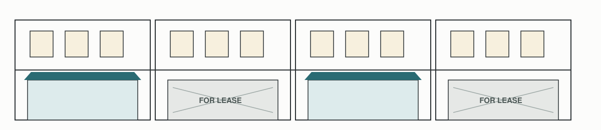
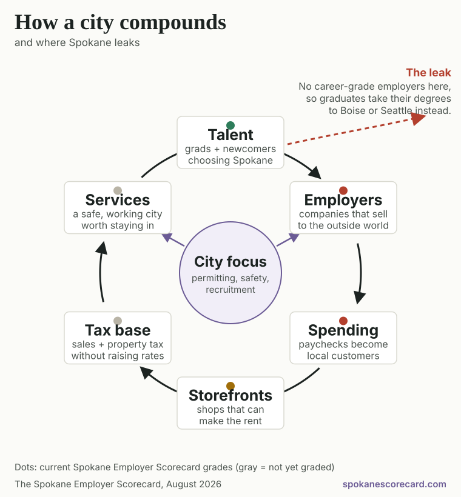

Updated August 2026 · Next update November 2026 · Every number links to its source · Past editions · Who made this
We want our kids to be able to stay here. That’s the whole thing.
Which takes employers who pay enough to make staying possible. That is what the word prosperity means on this page. Not a slogan. A paycheck that covers a life in Spokane.
So four times a year we check whether the region is landing those employers. The grades are judgment calls. The numbers underneath them are not. Every one is public and we link all of them. Go look.
So how is that going?
Off track
Payrolls shrank by 2,900 jobs over the past year, and nearly all the growth that remains is in one sector.
Off trackmore weak than strong
Mixedweak and strong tie
On trackmore strong than weak
Spokane is here. Three measures are weak and one is strong. One weak measure turning strong, or two turning mixed, would move the region to the middle.
Eight measures this quarter:
1 strong4 mixed3 weak
A report card on Spokane, not on any employer. Nobody here is grading a business. We are grading how the region is doing at drawing good ones in. Every answer links to public data you can look up yourself.
Regional results
Eight measures, graded from public data
The question, stated exactly: is Spokane attracting the kind of employers that raise wages?
These eight grades measure results across Spokane County and the metro. They do not grade any one institution. No mayor, council, university or employer controls them alone. Who controls which levers is a separate section, on purpose.
What changed this quarter: nothing yet. This is the first edition. From the November update on, this line names every figure that moved and every grade that changed, and the previous edition stays readable in past editions.
Tap any measure to see how it compares, why it matters, and where the number came from. Figures cover Spokane County or the Spokane metro, which includes Stevens County. If a measure covers only the City of Spokane, it says so.
What the County, Metro and City labels mean
City is Spokane proper. County is Spokane County. Metro is the county plus Stevens County. Each measure is labeled with the one it covers, because a number that is true of the metro is not automatically true of the city. Most job and wage data only exists at county or metro level, which is why the labels change from card to card.
CountyWeakJob growth−2,900jobs, year over year2026 pace is 14% of the 5-year average. Tick marks the average.Payrolls fell 1.1% over the year
Spokane County payrolls fell 1.1% from June 2025 to June 2026. In 2026 the metro has added an average of 58 jobs a month, the weakest pace since 2020.
5-yr average+410/mo
2025+133/mo
2026+58/mo
Average jobs added per month, Spokane metro
Why it matters: this is the bottom line. A region attracting employers adds jobs faster than it loses them. Right now Spokane is going backwards.
CountyWeakWho’s hiring1 sectordrives nearly all growthHealth care carries the load. Finance shed 12%.
Health care added about 5,900 jobs in five years (+13%). Finance and insurance shed 12% of its jobs in the same window. Manufacturing is hoping for stabilization, not growth.
Health care+13%
Finance & insurance−12%
Five-year job change by sector, Spokane County
Why it matters, and this is about the shape of an economy, not the worth of a job. Most health care serves people who already live here. Spokane is also a regional hospital hub, treating patients from Idaho and Montana, and that does bring outside money in. But the employers that lift a region’s pay are usually the ones selling to the outside world. Think manufacturing, software, professional services. Those are the ones not showing up. Local-serving work is essential and always will be; a region with no clinics or shops is not a region. The point is that something has to bring the outside money in first. Leaning on one sector is also a risk by itself. The test behind this grade is simple. Does the work bring money into the region, or just move money that is already here?
CountyMixedUnemployment3.8%June 202686% of the U.S. rate of 4.4%. Shorter is better here.Beats the U.S., but over a shrinking labor pool
Beats Washington (4.7%) and the U.S. (4.4%). But this number flatters us: it counts only people actively looking, and Spokane’s labor force participation lags the national rate, with retirements shrinking the pool faster than new workers replace it. A low rate over a shrinking base is not strength.
Spokane3.8%
U.S.4.4%
Washington4.7%
Unemployment rate, June 2026. Shorter bar is better.
Why it matters: this is the number politicians reach for, so it stays on the board, graded honestly. The truer measure is the share of working-age adults actually holding jobs, which Spokane’s own data project tracks. That becomes this card in November.
MetroMixedPaychecks$32.96average hourly wage98% of the U.S. average of $33.54.Nearly at parity, but income growth is falling behind
Spokane wages have nearly reached the national average. But per-person income grew 4.9% in 2024 while the U.S. grew 6.6%, so the gap with the rest of the country widened again.
Spokane$32.96
U.S.$33.54
Average hourly wage, May 2025
Why it matters: wage level is the clearest test of employer quality. Parity with the U.S. average is real progress. Losing ground on income growth says the progress isn’t compounding.
CountyMixedIncomes$44,107per person, 202497% of the U.S. figure, and 80% of Washington's.Below the U.S., and 80% of Washington
Below the U.S. ($45,256) and just 80% of Washington ($55,177), and it grew 4.9% in 2024 while the nation grew 6.6%, so the gap widened. Household income did top the U.S. median for the first time ($86,206 vs. about $81,400), but economists can’t fully explain that one-year jump and suspect federal transfer payments, so it doesn’t carry a grade on its own.
Spokane$44.1k
U.S.$45.3k
Washington$55.2k
Per-person income, 2024
Why it matters: income per person is the harder test. Household size and government payments cannot inflate it. In November this card adds the cleanest read on employer quality: the middle wage for people working full time, all year (Census table S2001).
CityWeakSpending+1.2%taxable retail sales, Q4 202427% of the long-run normal of 4 to 5%.A quarter of its normal pace
The newest county reading (Q2 2025) grew 2.8% against the state’s 3.4%, and the long-run normal is 4–5%. In the latest city-level release, Spokane grew just 1.2% while its own county grew 3.1%. County sales tax receipts have grown about 1% against a two-decade average of 4%.
City (Q4 ’24)+1.2%
County (Q2 ’25)+2.8%
State (Q2 ’25)+3.4%
Long-run norm4–5%
Taxable retail sales growth, year over year, latest reading per geography
Why it matters: this is where jobs and wages become street life. When spending growth in the city runs at a quarter of its historical pace, storefronts stay dark no matter what gets built.
MetroMixedStorefronts5.3%retail vacancy, Q2 2026Flat year over year, little new construction
Flat compared to a year ago. Only about 49,000 square feet of retail is being built, far below the ten-year average. Downtown lags because daytime office workers never fully came back. Spokane Valley sits at a healthy 4 to 5%.
Why it matters: developers aren’t refusing to build ground-floor retail out of stubbornness. They’re reading the same demand numbers on this page. Fill the jobs and the wages, and the storefronts follow.
CountyStrongPeople~556,000county residentsGrowing faster than the state and the country
Spokane grew slightly faster than both the state and the country last year, and the largest age group is 25 to 34.
Why it matters: workers are choosing Spokane before the employers do. That’s the region’s strongest card, and it’s perishable. Working-age people who can’t find higher-wage work here eventually leave to find it.
People keep arriving. Employer growth isn’t keeping up.
−2,900jobs lost across Spokane County over the past year
1 sectorhealth care carries nearly all the growth that is left
+1.2%city spending growth, against a long-run normal of 4 to 5%
People556kgrowing
→
Employers−2,900jobs lost
→
Paychecks$32.96near U.S.
→
Spending+1.2%below normal
→
Storefronts5.3%vacant, flat
Spokane’s population engine is working. The employer engine is not keeping up, and the weakness shows up downstream.

This is what the last link in that chain looks like from the sidewalk. Apartments full upstairs. Half the ground floor papered over. It is a drawing, not a photograph of any real block. The 5.3% vacancy figure above is the evidence. This only shows what that number looks like when you walk past it.See the whole machine, and why each turn makes the next one easier
Everything on this page is one machine. Schools and new arrivals supply workers. Employers turn workers into paychecks. Paychecks become customers. Customers fill storefronts and pay taxes. Those taxes fund the services that make people and companies want to stay. Each turn makes the next one easier. Unless a gear is missing.

The dots are Spokane’s current grades from the measures above. Green where people enter the wheel, red exactly where the employers should be, and the red bleeding downstream. The region’s challenge isn’t to spin every gear. It’s to fix the one that’s missing, and city hall’s part is to pull its own levers toward it.
Read the longer explanation
If you live here, you’ve seen the puzzle pieces without the box top. Ground-floor spaces sit empty on Monroe while apartments rise around them. New commercial construction has slowed to a trickle. Help-wanted signs everywhere, yet the higher-wage jobs always seem to be somewhere else.
None of it is random. Storefronts stay dark because spending in the city is growing at a quarter of its normal pace. Spending lags because the region shed jobs this year, and the jobs it is creating cluster in one sector. And when wage-raising employers are scarce, talented people commute, take remote jobs with out-of-town firms, or leave for cities that have them. The eight measures above are that story, counted. The employer calculator lets you test the way out for yourself.
The objection
But people here say the problem is taxes
Greater Spokane Inc. polls Spokane-area voters every few months. In April 2026 it found that 68% had actively considered moving out of the area. When it asked them why, jobs and wages did not make the list at all.
Taxes21%
Government leadership19%
Cost of living17%
Public safety13%
Homelessness7%
Reasons given by the 395 respondents who had considered leaving. GSI’s Pulse, fourth edition, 600 voters across the city, the valley and the county, April 2026.
That is a real finding from a real poll, run by the region’s own economic development group. It is also not the argument this page makes. So which one is right?
Both. It is the same squeeze from opposite ends.
A tax bill is not a fixed weight. It is a share of what you earn. The same property tax is an irritation at one income and a reason to leave at another.
Washington makes that gap unusually wide. The Institute on Taxation and Economic Policy ranks this state 49th out of 50 for how much more of their income lower earners hand over than higher earners do.
13.8%of income paid in state and local taxes by the poorest fifth of Washington households
4.1%paid by the wealthiest 1%, households earning over $848,400
Now set that next to the Incomes measure above. Spokane earns about 80 cents for every dollar of income in Washington. The tax structure here is the same one they have in Bellevue. The paychecks are not.
So when a Spokane voter says taxes and this page says wages, we are pointing at the same squeeze from opposite ends. You can loosen it by lowering what people pay, or by raising what they earn. This page is about the second one, because it is the one that compounds.
Three things to be careful about in this section
These tax numbers are for Washington as a whole. There is no Spokane version of them, and we are not going to invent one. What we can say is structural: this state takes a bigger share from lower earners, and Spokane earns less than the state average.
Washington is getting less regressive, not more. It moved off last place in 2024, after the Working Families Tax Credit and the capital gains tax. That is real progress and it belongs on the record.
The poll asked voters, not residents. Voters skew older and more settled than the young people deciding whether to start a career here. Their reasons are worth knowing. They are not the whole picture.
Five hundred jobs is five hundred jobs, until you ask what kind. Jobs at companies that sell to the outside world bring new money in, and that money becomes customers for everyone else.
Money that comes in from outside
Someone elsewhere pays Spokane for something
Software sold nationally
Manufactured goods shipped out
Engineering and professional work done for clients elsewhere
Patients from Idaho and Montana treated here
Money already here, moving around
Spokane paying Spokane
Groceries and restaurants
Retail
Clinics serving neighbors
Trades and local services
Both sides are real jobs and real paychecks. Neither is worth more than the other. The difference is that the left side grows the pot, and the right side circulates it. A region needs both, but only one of them makes the pot bigger.
Illustrative multiplier range, not a Spokane forecast
500 software jobs
900 to 1,900
additional local jobs, on top of the 500
500 retail jobs
0 to 100
additional local jobs, on top of the 500
The same 500 hires either build a second wave or don’t.
Ranges, never single numbers. They come from published research on local multipliers (Moretti, capped downward per Bartik and the Upjohn Institute), and we widened them on purpose. This shows how the effect works. It is not a forecast.
This page did not invent a standard. Greater Spokane Inc.’s Believe Spokane campaign published five-year goals for the region, and posts updates against them.
5,000new jobs
$1Bnew capital investment
300internships with local employers
5,000students given career pathway experiences
So how are we doing?
That is the whole job of this page. The eight measures above are public data on whether the region is getting there. Greater Spokane Inc. runs the plays. This is the scoreboard, kept by somebody who is not running them.
Who controls what
Nobody moves those numbers alone
The grades above are regional results. The levers below belong to named institutions. Keeping those two apart is what makes this a scorecard and not an accusation.
The fairest criticism of any scorecard is that outcomes are co-produced, so blaming one office is cheap. Agreed. So here is the same machine with name tags: each actor, the levers only they hold, and where things stand. Status lines follow the same rule as grades. Tied to a measure above, tied to a source, or stated as an open question. Open questions are invitations. Send the data and it gets linked.
Six actors, one economy. None of them moves those eight numbers alone. Open any one below for the levers it actually holds and where things stand.
City of Spokane
How fast permits move, and how predictable they are. Zoning that keeps land ready for employers to build on. Downtown safety. What businesses pay in fees. Where the council spends its time.
Not scored yetThe city has an economic development chapter in its comprehensive plan, with living-wage language and target investment areas. What it does not publish is measurable progress. Later editions aim to score things the city controls outright. How long a permit takes. Whether zoned land is ready to build on. What businesses pay in fees.
The regional recruiters
Spokane County and Greater Spokane Inc. run the actual sales effort. They pick the target industries, get sites ready, line up incentives, and make the pitch employers hear.
Goals publishedGSI’s Believe Spokane campaign sets public five-year goals, including 5,000 jobs and $1 billion in new capital investment, and posts progress updates. GSI also runs a public regional indicators dashboard. The plan is not the open question. Progress against it is.
Higher education
Gonzaga, Whitworth, EWU, WSU Spokane, the UW and GU medical partnership, and the community colleges. They decide how many graduates come out, and in which fields. They also decide whether students intern at local firms, and whether research here turns into companies.
Partly publishedGonzaga publishes a First Destination dashboard you can filter by major and by location. Whitworth publishes graduate outcomes too. Nursing retention is reported and strong. What the region lacks is one comparable number across all the schools.
Anchor employers
Itron, Kaiser Aluminum, Providence, MultiCare, Avista and others. They hold the choice Boise teaches: grow here, or grow somewhere else. They also decide how many interns they take and which local suppliers they build up.
Regional signal weakThis grade describes the region, not any one company. Traded-sector hiring across Spokane is weak. That is not a mark against any employer who is investing here. What we cannot see is which local anchors are adding payroll and capital, because that is not published.
The state of Washington
Taxes, incentives, roads and other infrastructure, and college funding east of the Cascades. Also the minimum wage, which already pushed Spokane’s hourly pay close to the national average.
Upstream, not gradedThis is the biggest lever on the board and the one furthest from Spokane. Tax structure, incentives, infrastructure money and higher-education funding east of the Cascades are all set in Olympia. This page grades regional outcomes rather than state policy, but a scorecard that pretended the state was a footnote would be lying about how the machine works.
Residents, including this page
Attention, votes, meeting rooms, and corrections. On track looks like showing up when the levers above get discussed.
You’re reading the lever.
The longer version, including what city hall does and doesn’t control
No mayor lands a factory alone, and this page does not pretend otherwise. Landing employers runs through Greater Spokane Inc., the county, the state, and forces nobody here controls. But the city does hold real levers. How fast and how predictably it issues permits. Whether land zoned for employers can actually be built on. Whether downtown feels safe enough to bring workers back. What it charges a business to operate. And where the council spends its time.
The grades above measure the region’s results. The question for city hall is simpler: are your levers pulled toward these numbers, or toward something else? When the agenda majors on the minors, this page is the reminder of what the majors are.
On higher education, here is the detail. The number gets published exactly where it looks good. SCC reports that 99% of its nursing graduates stay in the Spokane area. Gonzaga and EWU report similar strength in nursing. For engineering, computing and business, the fields the missing employers hire from, we could not find one local school that publishes how many graduates stay. There is a regional number called “retention,” but it tracks whether students stay enrolled, not whether graduates stay in town. The first school to publish this by program gets celebrated at the top of this page.
On big local employers. Cheap power is already drawing interest from data centers, which shows the pull is real. The question is whether it turns into employers who hire a lot of people.
It’s been done
Four cities Spokane can learn from
Different sizes and different advantages. None of them is Spokane’s twin. The pattern is what carries over. Each city picked an asset it already had, organized around it, and stuck with it for a decade.
BoiseGrew its own anchor
Asset
Micron
Move
Help the anchor expand at home
Result
$15B grew to roughly $50B
Idaho did not only chase strangers. It helped a company already there grow at home. Micron is building advanced memory plants at its Boise headquarters. The investment started at $15 billion, the largest private investment in state history. It has since grown to roughly $50 billion. About 17,000 Idaho jobs are tied to it, and suppliers like Lam Research opened offices behind it. Keeping a company is its own kind of recruiting.
Spokane’s version: the big employers already here, like Itron and Kaiser Aluminum. Their next expansion has to want to happen here.
Chattanooga was once called the dirtiest city in America. In 2008 it landed a $1 billion Volkswagen plant. A University of Tennessee study later found the plant beat its own job forecasts. It counted more than 12,400 jobs by 2012, direct and indirect. Volkswagen-related work now supports about 17,000 jobs in Tennessee. The city also built the first citywide gigabit internet network in the country, to give employers a concrete reason to look.
Spokane’s version: cheap, reliable power. It is already drawing interest from data centers. The job is turning that interest into employers who hire a lot of people, not just server halls.
Redstone Arsenal now employs more than 42,000 people. It drives half the metro economy. The region kept selling that asset until the FBI made Redstone its unofficial second headquarters, heading toward thousands of staff. Space Command followed.
Spokane’s version: Fairchild Air Force Base, and a health sciences campus with two medical schools. Today we use neither as a way to draw employers.
This is the answer to “aren’t we too dependent on health care?” Steel collapsed. The city lost half its people. Leaders rebuilt on purpose around universities and hospitals. Then they turned that base into something bigger. Research at Carnegie Mellon grew into the largest cluster of robotics work in the country. More than 80 robotics companies now sit along a two-mile stretch.
Two honest caveats. Pittsburgh is several times our size. And the turnaround took decades, with pay recovering long before job counts did. The lesson holds anyway. An economy built on hospitals and universities can be a launchpad, if someone builds a way to turn research into companies.
Spokane’s version: two medical schools and a health sciences campus. They could seed medical technology the way Carnegie Mellon seeded robotics.
The pattern across all four: a named asset, a public plan, and years of unglamorous follow-through. Nothing on that list requires luck, size, or a coastline.
What we’re asking
Three things we’re asking leaders to do
Not a policy platform. Three commitments any mayor or council member could make tomorrow.
1
Adopt a scoreboard.
These eight measures or better ones. Report against them in public, on a schedule, the way the city already reports on potholes and permits.
2
Publish progress against the plan.
The plans exist. GSI has published five-year goals. The city has an economic development chapter in its comprehensive plan. What is missing is a short public scoreboard showing how we are tracking against them, updated on a schedule, in one place a resident can find.
3
Explain the tradeoffs.
Most city business has nothing to do with attracting employers, and shouldn’t. But when major money and attention get allocated, say out loud what each choice does for the numbers on this page. Name what is being traded away, not just what is being bought.
And one ask for Spokane’s colleges
Publish one comparable number.
Some of you already do a version of this. Gonzaga has a public dashboard you can filter by major and by location, and Whitworth publishes outcomes too. Credit where it is due.
What the region still lacks is one number that means the same thing at every school: the share of graduates in a given field working in the Spokane area a year out. Right now the reports are not comparable, so nobody can add them up.
And to be clear about what this measures. If a school produces 200 engineers and 150 leave, that is not the school failing. It is evidence the region does not have jobs for them. Graduate retention is a diagnostic for the employer ecosystem, not a grade on any university.
And one ask for the state
Publish which county graduates work in.
Washington already links school records to paycheck records. The state’s Earnings for Graduates dashboard shows what graduates earn, broken out by school and by major, using unemployment insurance wage records. What it does not show is where those graduates work. It only says “somewhere in Washington.”
The employer’s location is already sitting in those records. Adding county of employment is a different cut of a report that already exists. It is not a new survey. It would answer this for every school in the state at once, in weeks rather than years.
It would also have a known blind spot, and that is worth saying out loud. It would catch graduates who leave Spokane for Seattle, because Seattle is in Washington. It would miss the ones who leave for Boise or Denver. That is still far more than we know today.
And a commitment back: this scorecard isn’t rooting for anyone to fail. The quarter these numbers improve, the top of this page will say so, in green, with credit to whoever moved them.
The receipts
Argue with us
Every number above links to its source. The full methodology covers the grading rules, the limits of the data, and what it can and cannot tell you. Corrections are welcome, and they get posted.
How the grades work
Strong means Spokane beats its benchmark (the U.S. or Washington) or is clearly improving. Mixed means near benchmark or mixed signals. Weak means below benchmark and not improving. Grades are judgment calls made in public: every number links to its source, and corrections are welcome and will be posted.
The call at the top follows a rule we set before looking at the data. Off track when weak measures outnumber strong ones. Mixed when they tie. On track when strong ones win. There is no letter grade, on purpose. The eight measures are not equally important, and they are not independent of each other. Averaging them would suggest a precision this data does not have.
Unless a card says otherwise, the data covers Spokane County or the Spokane metro. That is the level where reliable public job data exists. Updated by hand, every quarter.
Coming in future updates
Measures worth adding, once the data can be had:
New business applications per resident (Census Business Formation Statistics).
How long the city takes to turn around a permit. The city controls this one outright.
Empty storefronts street by street. Monroe, Garland and Division would each get their own line, instead of being averaged away.
Whether land zoned for employers is actually ready to build on.
What the city charges a business to operate.
Big employer expansions kept or won.
One more arrives only when schools publish it: where graduates go, by school and program.